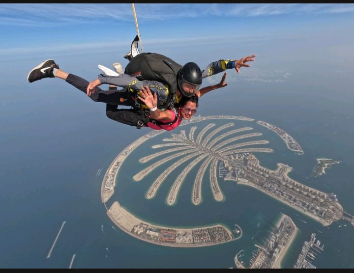
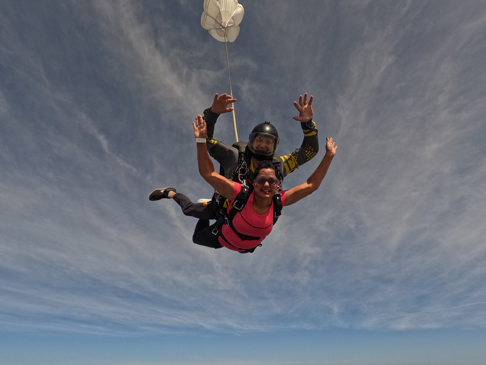
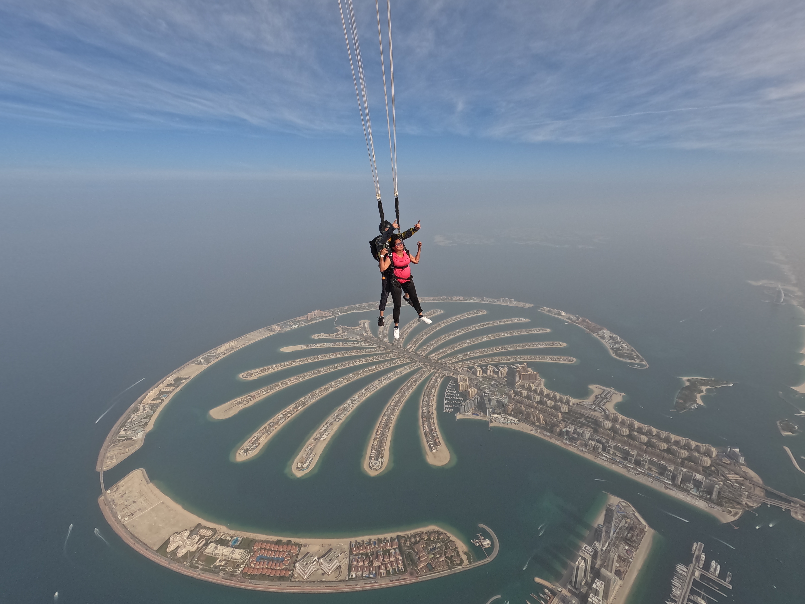

SKYDIVING THRILLING ADVENTURE
As I arrived at the Skydive Dubai dropzone, I was immediately struck by the incredible view of the Palm Jumeirah island and the Dubai skyline in the distance. The anticipation of what was to come was building, and I could feel my heart racing with excitement. I met with my instructor and was given a brief on what to expect during the skydive. After getting geared up and completing a short training session, it was time to board the plane.As the plane ascended to our jump altitude of 13,000 feet, I couldn't help but feel a mix of excitement and nervousness. But the stunning view from the plane, with the vast desert and the sparkling Arabian Gulf below, soon distracted me from any anxiety. As we reached our jump altitude, the doors of the plane were opened, and I was instructed to move towards the exit. I took a deep breath and prepared to jump.
The moment we exited the plane, the wind rushing past my face and the sensation of freefalling was indescribable. The view of the Palm Jumeirah island, the Dubai skyline, and the Arabian Gulf below was simply breathtaking. It was like nothing I had ever experienced before, and I felt truly alive. My instructor pulled the parachute, and suddenly we were gliding peacefully through the air, taking in the stunning views.
The peacefulness of the parachute ride gave me time to process what had just happened. The realization that I had just jumped out of a plane and had an incredible experience was overwhelming. As we landed softly on the ground, I felt a sense of accomplishment and pride. I had conquered my fears and pushed myself to do something incredible.
Skydiving in Dubai is an experience that I will never forget. The stunning views, the rush of adrenaline, and the feeling of accomplishment all make it an adventure of a lifetime. I highly recommend this experience to anyone who wants to step out of their comfort zone and have an unforgettable experience that will leave them feeling empowered and exhilarated. It truly is a once-in-a-lifetime experience that you won't regret.
Last Updated: 30th Apr 2023
VIEW OF SOME SNAPSHOTS....


